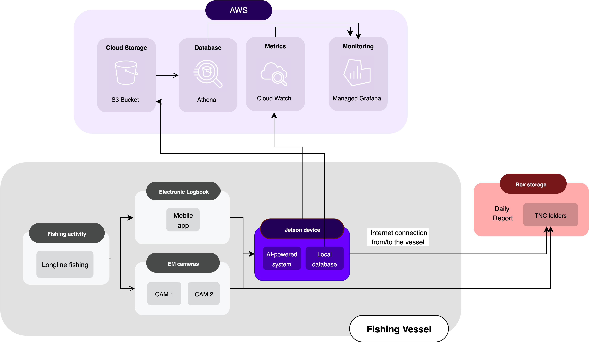

This project developed and deployed an AI-powered system that analyzes electronic monitoring (EM) footage of longline fishing activity directly onboard vessels, delivering near real-time insights that significantly enhance fisheries transparency. By combining edge computing, computer vision, and automated reporting, this system replaces time-intensive manual review of EM footage with same-day, actionable intelligence. Fishery managers can now receive species‑level catch counts and fishing risk profiles within hours of each hauling event, enabling timely compliance checks against quotas and regulations, and informed decisions on planning, pricing, and supply chain logistics—all before a vessel returns to port.
The project delivered four key contributions:
Industrial fishing occurs on more than half of the ocean’s surface, which is over three times the area covered by all land-based agriculture. It supplies billions of people with critical protein and supports millions of livelihoods worldwide. Yet today, over one-third of global fish stocks are being fished at unsustainable levels (Food and Agriculture Organization of the United Nations, 2020). In most industrial fisheries, fishers are required to report their own catch using logbooks, to ensure that quotas and regulations are met. However, without independent monitoring, this self-reporting is unverifiable, creating conditions where illegal, unreported, and unregulated (IUU) fishing can persist unchecked. IUU fishing is estimated to cause global economic losses of $10–20 billion annually (Agnew et al., 2009), while threatening marine biodiversity and sustainable fishing efforts.
To combat this lack of on-the-water monitoring, the Large-Scale Fisheries Program at The Nature Conservancy (TNC) has focused on scaling the use of electronic monitoring (EM) globally. EM involves equipping vessels with cameras, gear sensors, and GPS to continuously record and transmit information about fishing activity, giving fisheries managers and other stakeholders the means to independently verify logbook data. Despite EM’s promise to improve fisheries transparency, adoption has been slowed by the high cost and logistical burden of reviewing EM footage. In many cases, hard drives must be physically retrieved after a vessel returns to port from fishing and sent to data review centers, where EM footage is manually analyzed, often months after the fact, long after the seafood has entered supply chains. Verified catch data is needed in near real-time to support effective compliance and conservation actions.
To dismantle these major barriers to scaling EM, TNC partnered with Tryolabs to co-develop an AI-powered system capable of reviewing EM footage directly onboard vessels. The goal of our partnership was to develop a repeatable, edge-based EM footage review system that provides near real-time, verified information on the sustainability of a vessel’s catch before products enter global supply chains. The system automates the detection, identification, and counting of catch using edge computing and computer vision, enabling same-day reporting and near real-time monitoring without reliance on post-trip hard drive recovery or delayed human analysis.
The system was deployed on a semi-industrial longline fishing vessel that partnered with TNC for a pilot test. The vessel typically conducted two- to three-week fishing trips targeting tuna species, followed by one-week port stays. This operational rhythm allowed the Tryolabs team to collect EM footage under real-world conditions, annotate and validate the data, iteratively retrain the AI models, and deploy updated versions of the AI-powered system between trips.
The system integrates both hardware and software components in a robust, field-ready architecture (Figure 1). EM cameras installed on deck continuously record fishing operations, while a compact edge device—a NVIDIA Jetson Xavier NX—processes EM footage on the vessel in near real time. The Jetson device runs a fully containerized AI-powered system, capable of detecting fish, tracking their movement across the vessel’s deck, and counting retained and discarded catch. Predictions are stored in a local database along with vessel telemetry and captain-entered eLog data, and compiled into structured Daily Reports. These reports include summary statistics, fishing risk profiles, and image evidence for every AI catch prediction. Data is transmitted back to shore using Starlink satellite internet, and near real-time system performance is monitored through Amazon Web Services (AWS) using CloudWatch and Grafana dashboards.

The Tryolabs team would like to thank our volunteer Advisory Committee, Sanjay Nichani, Rakshit Agrawal, and Jeff Bier, for their thoughtful advice and technical guidance throughout this project. Their insights and support were instrumental in shaping the final solution.
This work is made possible thanks to The Nature Conservancy’s collaboration with the Patrick J. McGovern Foundation and other supporters.
We also sincerely appreciate the collaboration and commitment of our project partners: Bureau Veritas, Deckhand, Thalos, Instituto Costarricense de Pesca y Acuicultura (INCOPESCA), and CNIP.
Finally, we are especially thankful to the volunteer vessel owners, captains, and crew who generously contributed their time, knowledge, and effort in the field. Their participation was essential to the success of this work.